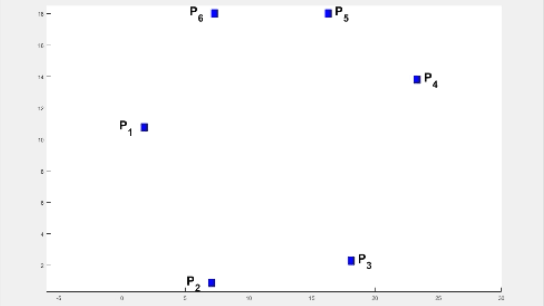

Research Direction
This page is an attempt to organize my research under various projects and provide an overview of each project. Some of these theoretical aspects have been validated on indigenously crafted, low-cost robotic testbeds.
Optimality in rendezvous of multi-agent systems
Agents (robots with communication) entrusted with a collaborative task need to determine an optimal location for meeting, and such a location varies dynamically based on the positions and capabilities (speed, on-board battery capacity, etc.) of various robots. Determination of optimal location has applications in factory automation, welfare support systems, or extractions in hazardous environments. In the past, very little work has been done in a generalized setting, especially with implementation on miniature robots.
My doctoral dissertation work computes optimal locations (using tools from computational geometry) for multi-agent systems amidst polygonal obstacles while minimizing (1) the total time of travel, (2) individual and (3) collective distances of travel of the robots. It is worth noting that unlike the classical shortest pathfinding algorithms, the problem of computing an optimal location starts without the knowledge of the end location (or destination). One of the results improves the complexity of computing such location with a minimax constraint for two robots from O(n3 log2 n) to O(n log2 n) where n is the total number of vertices of the obstacles. Further, the work presents a generalized algorithm for k robots with a complexity of O(k2 + k n log2 n).
Extension to Game-Theoretic framework via an adversarial robot
Adversarial robots are quite different from dynamic obstacles in that the former deliberately try to achieve rendezvous with one or more agents while the agents deliberately attempt to avoid such rendezvous. We study the effect of an intelligent vision-guided adversary that deliberately prevents rendezvous of two or more robots by 'attacking' the weaker ones. The problem is formulated in a Game Theoretic setting to determine and utilize the adversary's dominant strategy to compute a safe rendezvous location for the robots. The work extends to handling multiple agents and breaks free from the conventional practice of allowing complete communication between the adversary and the robots.
Humanoids and soft robotics
I have had the opportunity to assist in developing a Silicone Rubber-based Anthropomorphic Soft Robot Hand that is used to perform a comparative study of various kinds of grasps, primarily dealing with the pinch and enveloping grasps. The study utilizes a hybrid approach to determine the forward and inverse kinematics for continuum links (as opposed to the rigid links). In addition, humanoid robots have been developed and employed to study the effect of heterogeneity on the rendezvous of multiple agents.
Publications
A consolidated list of my published and ongoing research work is presented here:
B. Vundurthy and K. Sridharan, "Protecting an Autonomous Delivery Agent Against a Vision-Guided Adversary: Algorithms and Experimental Results," in IEEE Transactions on Industrial Informatics, vol. 16, no. 9, pp. 5667-5679, Sept. 2020 (Journal Impact Factor: 9.112).
B. Vundurthy and K. Sridharan, "Multiagent Gathering With Collision Avoidance and a Minimax Distance Criterion—Efficient Algorithms and Hardware Realization," in IEEE Transactions on Industrial Informatics, vol. 15, no. 2, pp. 699-709, Feb. 2019 (Journal Impact Factor: 9.112).
Sharad Kumar Singh, Puduru Viswanadha Reddy, and B. Vundurthy, "Study of multiple target defense differential games using receding horizon based switching strategies," in IEEE Transactions on Control Systems Technology, accepted for Publication in August 2021.
B. Vundurthy and K. Sridharan, "Time Optimal Rendezvous for Multi-Agent Systems Amidst Obstacles - Theory and Experiments," IECON 2018 - 44th Annual Conference of the IEEE Industrial Electronics Society, Washington, DC, 2018, pp. 2645-2650.
Onkar Kulkarni, B. Vundurthy, and K. Sridharan. 2019. Rendezvous of Heterogeneous Robots in Minimum Time - Theory and Experiments. In Proceedings of the Advances in Robotics 2019 (AIR 2019). Association for Computing Machinery, New York, NY, USA, Article 38, 1–6.
B. Vundurthy, A. More, S. V. V. Raju and K. Sridharan, "Rendezvous of heterogeneous robots amidst obstacles with limited communication," 2016 Indian Control Conference (ICC), Hyderabad, 2016, pp. 347-353.
P. Nagachandrika, B. Vundurthy, Yashrajsinh Parmar, R. Sarathi and K. Sridharan, "SRASRH: Design, Kinematic Analysis and Grasping Studies for a Silicone Rubber-based Anthropomorphic Soft Robot Hand," submitted to Advanced Robotics.
B. Vundurthy, Onkar Kulkarni and K. Sridharan, "Rendezvous of a Humanoid with a Wheeled Robot Amidst Heterogeneous Objects Based on a Minimax Distance Criterion," submitted to IEEE Robotics and Automation Letters.
Datla, U. S., Vundurthy B., Nguyen, N., Radic, M. Z., and Jones, C. N., "A multi-sensing microfluidic platform to study the host response to Pseudomonas aeruginosa infections, from an innate immune standpoint," submitted to Frontiers in Immunology.
S. Harinath and B. Vundurthy, "A survey of Deep Neural Networks for Mobile Robotics," to be submitted.
B. Vundurthy, Vijay Gupta and Aris Kanellopoulos, "Optimal strategies in a Bounded Rationality Framework for Repeated Games," to be submitted as a technical note to IEEE Transactions on Automatic Control.
Abstracts and Highlights from selected publications
This is an attempt to present some of my work in a manner that highlights the key contributions.1. Protecting an Autonomous Delivery Agent Against a Vision-Guided Adversary: Algorithms and Experimental Results
Abstract: Safety considerations call for the deployment of autonomous ground vehicles in defense and high-risk zones for the transport of goods from one point to another. Such vehicles face the threat of an intelligent autonomous adversary that may disrupt the transfer of material. This article investigates the challenges involved in autonomous protection of a delivery agent, via a land-based rescue agent, before interception of the delivery agent by the adversary occurs. In particular, we study how effectively an adversary equipped with a vision sensor can be handled by an autonomous rescue agent operating without vision support and relying only on wireless communication with the delivery agent. Taking capabilities and weights of the three vehicles into account, the delivery agent is assumed to be the slowest while the adversary operates at the highest speed among the three vehicles. A geometric framework based on Apollonius circles is proposed to analyze the interaction between the delivery and rescue agents. The adversary’s speed and its moves (based on the direction of the delivery agent) are taken into account, along with the Apollonius circles for the rescue-delivery agent pair, to determine the possibility of capture.
Regions in the plane where the delivery and rescue agents can meet, prior to a capture by the adversary, are obtained to compute safe regions for the delivery agent. Algorithms adopted by the delivery agent, rescue agent, and the adversary are described. We, then, explore the challenges in rescue of multiple delivery agents from a vision-guided adversary by introducing additional rescue agents. In particular, we study protection of k delivery agents (from an adversary) via k rescue agents. Algorithms to compute 1) multiple meeting points, one each for a delivery agent-rescue agent pair and 2) the strategy of the adversary to capture any one of the k delivery agents are presented. Experiments with multiple agents show that the delivery and rescue agents can execute their strategies using simply low-end microcontrollers without external memory.
2. Multi-Agent Gathering with Collision Avoidance and a Minimax Distance Criterion
Abstract: Multiple autonomous agents working cooperatively have contributed to the development of robust large-scale systems. While substantial work has been done in manufacturing and domestic environments, a key consideration for small hardware agents engaged in collaborative factory automation and welfare support systems is limited area and power on-board. When the agents attempt to meet for performing a task, it is natural for them to encounter obstacles and it is desirable for each agent to optimize its resources during its navigation. In this paper, we develop efficient geometric algorithms to find a point, termed as the gathering point (and denoted by PG), for the agents that minimizes the maximum of path lengths.
In particular, we present an O(n log2 n) time algorithm for calculation of PG for an environment with two agents and n static polygonal obstacles. We then use the notion of a weighted minimax point to derive an efficient algorithm (with complexity of O(k2 + k n log2 n)) for computing PG for an environment with k agents and n obstacles. An enhancement to a dynamic environment is then presented. We also present details of an efficient hardware realization of the algorithms. Each agent, equipped with only an ATmega328P microcontroller and no external memory, executes the algorithms. Experiments with multiple agents navigating amidst static as well as dynamic obstacles are reported. The adjacent .gif file shows how the gathering point shifts from PM to PG when obstacles are introduced amidst six agents.

3. Study of multiple target defense differential games using receding horizon based switching strategies
Abstract: In this paper, we study a variation of the Active Target-Attacker-Defender (ATAD) differential game involving multiple targets, an attacker and a defender. Our model allows for (i) a capability of the defender to switch roles from rescuer (rendezvous with all the targets) to interceptor (intercepts the attacker) and vice-versa; (ii) the attacker to continuously pursue the closest target (which can change during the course of the game). We assume that the mode of the defender (rescue or interception) defines the mode of the game itself. Using the framework of Games of a Degree, we first analyze the game within each mode. More specifically, the objectives of the players are taken as a combination of weighted Euclidean distances and penalties on their control efforts. We model the interaction of the players within each mode as a linear quadratic differential game (LQDG) and obtain the open-loop Nash equilibrium strategies. We then use the receding horizon approach to enable switching between the modes to obtain switching strategies for the players. By partitioning the matrices associated with the Riccati differential equations we obtain geometric characterization of the trajectories of the players. Further, under mild restrictions on the problem parameters and for a particular choice of the defender’s switching function we show that interception mode is invariant. We illustrate our results with numerical simulations. Experimental results involving multiple autonomous differential drive mobile robots are presented.
4. Time Optimal Rendezvous for Multi-Agent Systems Amidst Obstacles - Theory and Experiments
Abstract: Rendezvous of multiple autonomous agents has been of active interest in the last decade. Considerable work has been done on this problem with constraints on sensing and shape of the environment. However, not much is known on rendezvous amidst obstacles. When obstacles are introduced into the setting, it becomes natural to explore strategies for rendezvous that optimize some parameter (such as distance, time etc.). Our objective in this paper is to compute a location (which we refer to as the Time Optimal Rendezvous Point (TORP)) that minimizes the time for rendezvous amidst obstacles. We discuss challenges in finding TORP and develop efficient algorithms to compute TORP for r agents moving amidst m static polygonal obstacles. We then extend the analysis to handle dynamic obstacles. Experimental results are presented to validate the theory.
In the absence of obstacles, the TORP turns out to be at the center of the smallest enclosing circle. The computation of this circle is performed in O(k2) time where k is the number of agents. An illustration to compute this circle starting with two arbitrary agents and expanding to enclose all the remaining circles, all the while ensuring the smallest radius for the circle is shown below.
The problem becomes quite interesting when obstacles are involved. The times elapsed by various agents in arriving at various obstacle vertices play a role in computing TORP. We first present a result for k agents with finite times elapsed at their locations in the absence of obstacles. The weights at these locations are shown as circles with appropriate radii and the smallest enclosing circle encloses each of these smaller circles (shown below). We utilize this result to compute the TORP for k agents moving amidst n polygonal obstacles.